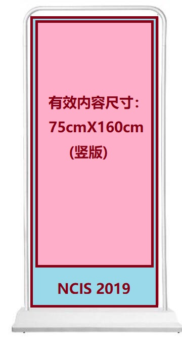

信息存储专委会委员成果Poster展示
活动介绍
为了促进CCF信息存储专委会委员之间的交流，并集中展示存储专委会近年来的科研成果，NCIS 2019特设“专委委员成果展示”活动。展示活动将采取Poster海报的形式进行交流。每位CCF信息存储专委会委员可以准备一份Poster，介绍各自研究组的研究进展和取得的成果。本次活动由会务组统一购买易拉宝展架并打印制作Poster。
Poster展示时间：2019年9月19日 下午
Poster收集截止日期：2019年9月5日
Poster规格要求：易拉宝海报大小为80cm*180cm, 需要预留本次会议logo及装订孔，因此Poster的实际有效内容不宜超过75cm*160cm。Poster请提供高清PDF格式文档。
Poster提交方式：请通过邮件方式在8月20日前，发送至ncis2019@163.com， 邮件名称请命名为“poster+姓名+工作单位”，例如“poster+张三+深圳大学”。

执行主席
邓玉辉 暨南大学